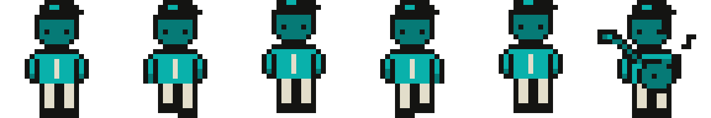
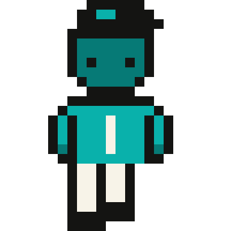

Contact sheet · original IP · four values per ramp · nearest-neighbour only
48×48 native · idle, 4-frame walk, playing · both ramps
Tiffany ramp — idle · walk 1–4 · play

Sepia ramp — same grids, warm lightest value

Idle @8x

Playing @8x

Walk loop · 8fps · GIF

Walk 1 on ink field